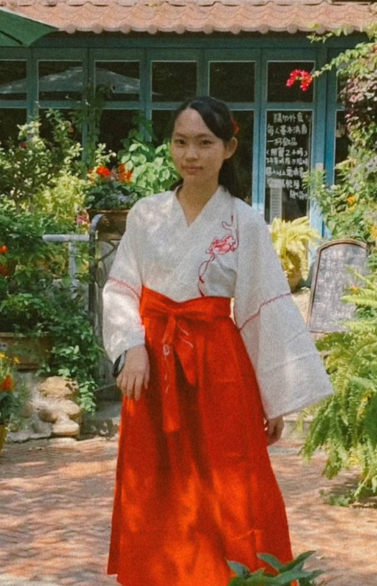

故事，是我幽暗生命中的一道微光，指引著我走出迷茫的時刻。
我熱愛故事帶給我的自由感，使我遨遊於萬千世界的風景之中。我可以是無所不能的超能力者，可以是萬人之上的帝王，也可以是個做著夢的凡人。

自我記述
我是吳巧妍。性格隨和，耐心，以及天馬行空。
擅長及熱愛創作，不論是小說還是劇本。此外，上了大學後也會偶爾剪輯影片、做圖，甚至是做遊戲。
因家庭環境之故，自幼對「不自由」感到痛苦後，便沉浸於 ACG 與故事世界中。對我而言，文字與多媒體創作不僅僅是興趣，更是刻在骨子裡、作為生命一盞燈的愛好。
因為走進這個文化而獲力量及快樂；如今，我想成為這份文化的其中一位生產者，讓更多人理解並感受由無數熱愛孵化而出的故事世界。
- Unity
- C#
- HTML
- Figma
- Illustrator
- Adobe
Premiere